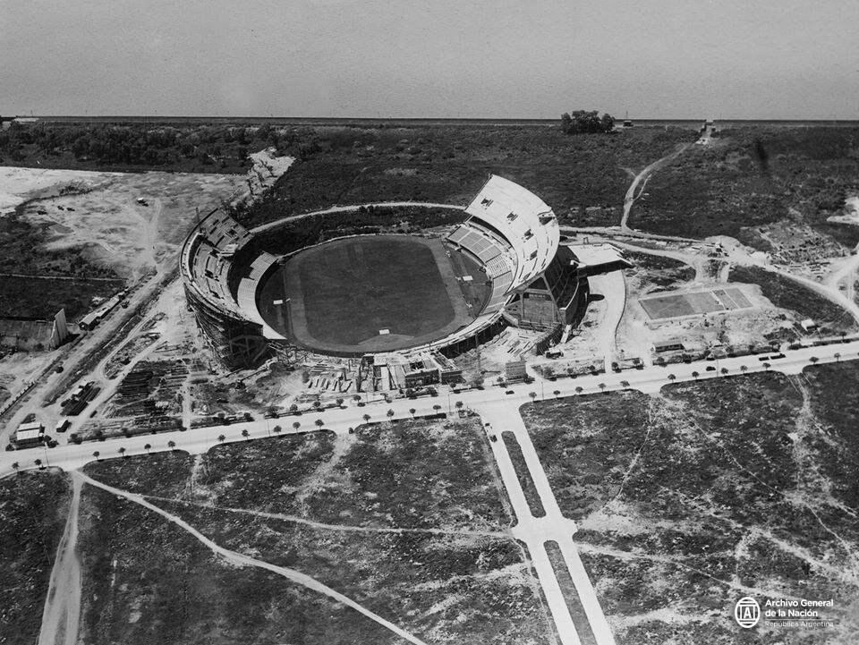
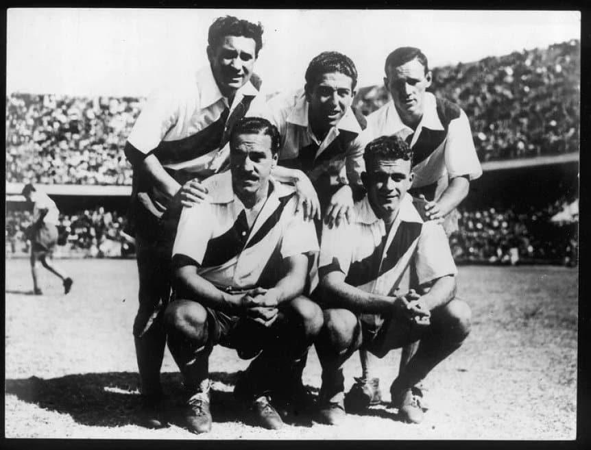
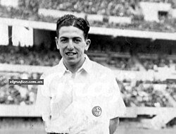
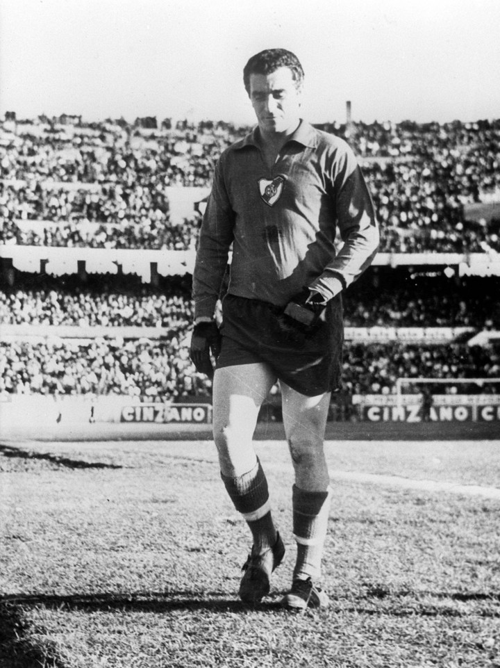
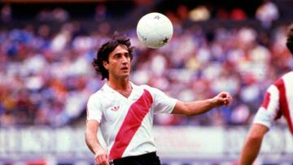
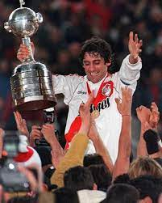
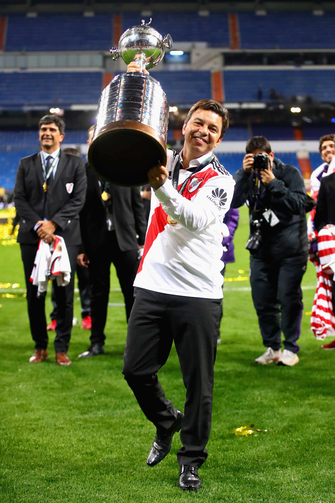

Historia del club
Los orígenes del más grande
El Club Atlético River Plate nació el 25 de mayo de 1901 en el barrio porteño de La Boca. Con el paso de los años, el club comenzó a forjar una identidad propia basada en el fútbol ofensivo, el talento individual y una hinchada que pronto se convertiría en una de las más fieles de la Argentina. Su mudanza definitiva al barrio de Núñez, en 1938, marcó un antes y un después: con la inauguración del monumental Estadio Antonio Vespucio Liberti, conocido mundialmente como El Monumental, River consolidó su grandeza tanto en lo deportivo como en lo institucional.
La Máquina
En la década de 1940, River Plate revolucionó el fútbol con un equipo que aún hoy se recuerda como una obra de arte: La Máquina. Integrada por Juan Carlos Muñoz, José Manuel Moreno, Adolfo Pedernera, Ángel Labruna y Félix Loustau, esta delantera mítica impuso un estilo de juego adelantado a su tiempo, basado en la precisión, la movilidad y la inteligencia colectiva. La Máquina no solo ganó títulos, sino que dejó una huella indeleble en la historia del fútbol mundial, siendo precursora del llamado “fútbol total” décadas antes de su popularización en Europa.
Los ídolos que forman parte de la historia de River
Ángel Labruna - El eterno ídolo
Máximo goleador de la historia de River y del Superclásico ante Boca Juniors, Ángel Labruna es sinónimo de pasión y gloria. Con más de 500 goles en partidos oficiales y amistosos, su figura trascendió generaciones. Como jugador y luego como entrenador, Labruna fue uno de los principales responsables de mantener viva la identidad ofensiva del club.
Amadeo Carrizo - El arquero revolucionario
Considerado uno de los mejores arqueros del siglo XX, Amadeo Carrizo cambió para siempre la forma de entender el puesto. Fue el primero en salir a cortar centros, jugar con los pies y brindar seguridad desde el fondo. Su elegancia y liderazgo lo convirtieron en una leyenda tanto para los hinchas como para el fútbol mundial
Norberto "Beto" Alonso - Magia y corazón
En los años 70 y principios de los 80, el Beto Alonso encarnó la esencia del fútbol riverplatense: talento, clase y amor por la camiseta. Ídolo indiscutido, fue pieza clave para romper la racha de 18 años sin títulos en 1975 y protagonista de gestas inolvidables, como su gol con la pelota pintada de blanco en la Bombonera.
Enzo Francescoli - El príncipe uruguayo
Durante los 80 y 90, Enzo Francescoli se transformó en símbolo de elegancia y jerarquía. Ganador de múltiples campeonatos locales y de la Copa Libertadores 1996, el “Príncipe” dejó una marca imborrable, además de inspirar a una generación de futbolistas, entre ellos Zinedine Zidane, quien lo consideró su ídolo
Marcelo Gallardo - El Muñeco que cambió la historia
Ya en el siglo XXI, Marcelo “Muñeco” Gallardo se convirtió en una de las figuras más importantes en la historia moderna del club. Primero como jugador talentoso y luego como director técnico, Gallardo lideró un ciclo dorado que incluyó dos Copas Libertadores (2015 y 2018), esta última ante Boca Juniors en la inolvidable final de Madrid. Su gestión dejó una huella imborrable en la identidad contemporánea de River: humildad, trabajo y grandeza.
